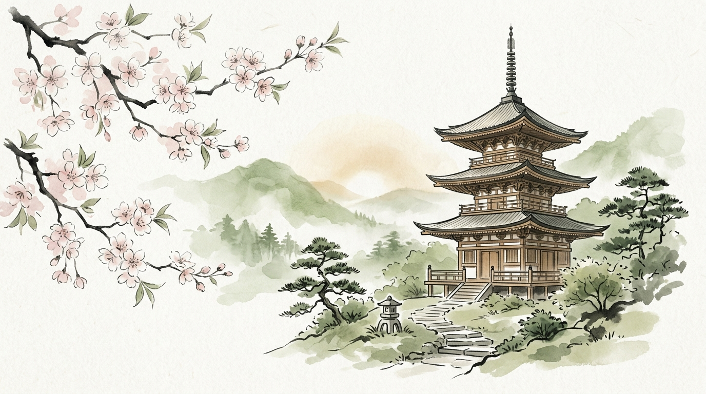

Langkah Pertama: Vokal & Konsonan
Pelajari dasar 46 karakter Hiragana mulai dari vokal dasar hingga pembentukan kata sederhana sehari-hari.
あ★★★1. Vokal Dasar
Level 1 • Vokal Dasar Hiragana
Anda telah menguasai vokal dasar dengan sempurna. Latih kembali memori untuk menjaga ketajaman refleks membaca.
か★★★2. Baris Ka
Level 2 • Baris Ka & Kosakata
Kombinasi konsonan K dengan vokal dasar. Contoh kata: 傘 (kasa - payung), 川 (kawa - sungai).
さ★★☆3. Baris Sa
Level 3 • Baris Sa & Pelafalan Khusus
Perhatikan pelafalan khusus "shi" (bukan "si"). Contoh kata: 魚 (sakana - ikan), 寿司 (sushi).
Peti Koin Mon
Selamat! Anda Menemukan Harta Karun
Sebagai apresiasi ketekunan belajar 14 hari beruntun, Anda memperoleh hadiah khusus!
Lanjutkan! +20 XPた4. Baris Ta (Aktif)
Level 4 • Baris Ta & Konsonan Halus
Karakter unik: chi (ち) dan tsu (つ). Siap menguji pemahaman dan membuka gerbang checkpoint selanjutnya!
な5. Baris Na
Level 5 • Baris Na (なにぬねの)
Karakter penting untuk partikel gramatikal kepemilikan の (no) dan kata 何 (nani - apa).
6. Angka 1-10
Level Masih Terkunci
Langkah demi langkah adalah filosofi jalan Zen. Selesaikan pelajaran sebelumnya untuk membuka tantangan baru ini!
Kerjakan Level Aktif SekarangPeti Magatama
Level Masih Terkunci
Langkah demi langkah adalah filosofi jalan Zen. Selesaikan pelajaran sebelumnya untuk membuka tantangan baru ini!
Kerjakan Level Aktif Sekarang⛩️Checkpoint Torii
⛩️ Ujian Evaluasi Gerbang Torii
Ujian komprehensif menguji seluruh huruf Hiragana dari Vokal hingga baris Na sebelum Anda diizinkan memasuki Unit 2 (Katakana).
Menjelajah Katakana & Nama Benda
Kuasai huruf Katakana untuk membaca menu restoran, nama kota dunia, dan teknologi terkini.
アUnit 2 • Katakana
Level Masih Terkunci
Langkah demi langkah adalah filosofi jalan Zen. Selesaikan pelajaran sebelumnya untuk membuka tantangan baru ini!
Kerjakan Level Aktif Sekarang